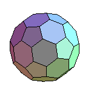

多変数関数論サマーセミナー(第42回,2003年度)
2003年度の多変数関数論サマーセミナーは、8月2日(土)-5日(火)に
雲仙福田屋
にて行われました。
プログラム
多変数関数論ホームページへのリンク

Last updated on August 9, 2004.
世話人:安達謙三(長崎大学教育学部),k-adachi@net.nagasaki-u.ac.jp
Webからの参加申込み: 西村保一郎(大阪医科大学),mat001@art.osaka-med.ac.jp
Returnto the Top Page